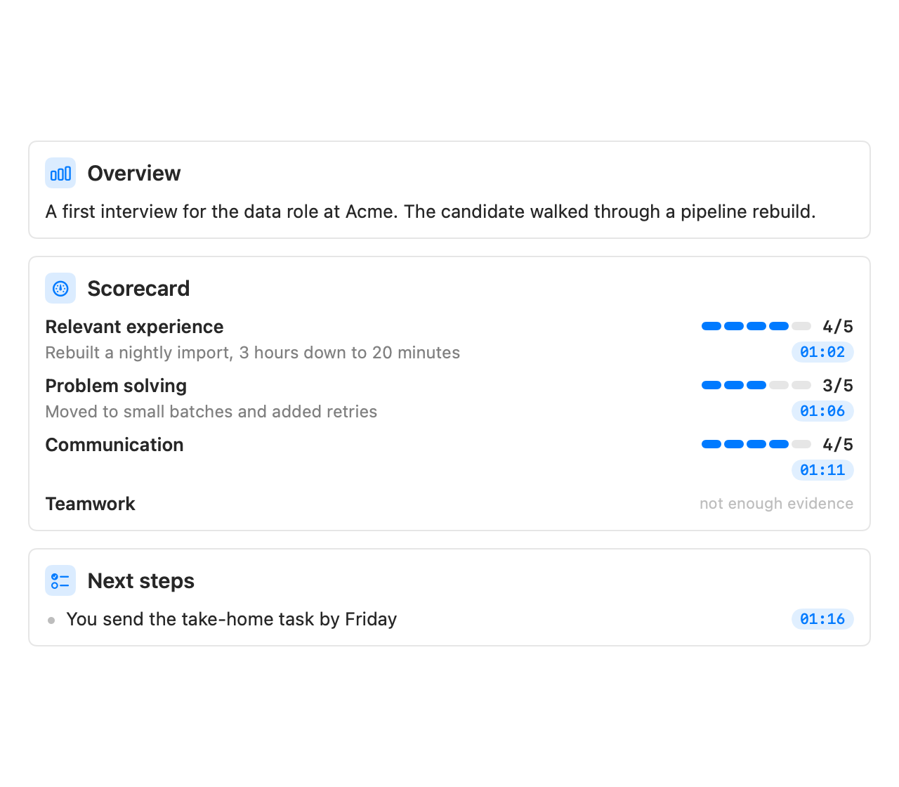
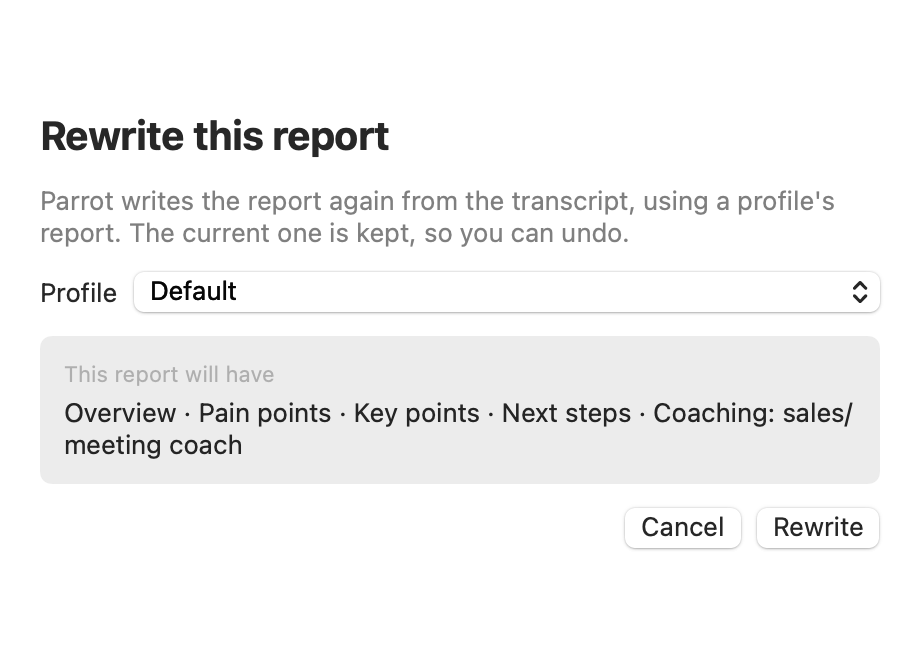

When a recording stops (and the Assistant is set up), Parrot writes a report in the background. What it covers depends on the call's profile: by default an overview of the call, pain points, key points and next steps; budget, decision-maker and timeline for a sales call; a scorecard for an interview. Most also get a coaching section that looks at how you did: talk balance, what went well, what to try next time, and which objections came up and whether they got handled. The insights the Assistant raised live also land in the meeting, so nothing from the call evaporates.
Reports run happily on a local model since nobody is waiting on them. A few minutes on a slow model is fine; it appears when it's ready.
No report on a meeting? That happens when the Assistant was off during the call, or its AI couldn't be reached. Open the meeting's Report tab and click Write report. It uses the AI you picked for reports in Settings, and a private meeting's report is still written on your Mac.
Each point in the report ends with a small time chip, like 12:34. Click it to see the exact line that backs the point, with who said it and a Play from Here button, or Show in Transcript to jump there. Parrot checks every chip against the transcript on your Mac. A time where nobody spoke gets no chip, and a promise or next step with no line behind it is marked unverified, so an AI slip can't turn into a commitment you think somebody made. Reports written before this feature look the same as before.
Profiles like Interview and Investor pitch score the call on a few criteria. Each row shows the score out of 5, the reason, and the moment that backs it; click the time to hear it.

A score only shows when it points to a real moment in the call. If the AI gave a score without one, the row says no moment cited; if the call didn't show enough, not enough evidence. Scorecards judge only what was said, never personal traits. They help you take notes: you make the call.
Changed a profile, or recorded a call under the wrong one? Rewrite Report… (top right on the meeting page) writes the report again from the transcript, with any profile's report. The meeting moves to that profile.

After a call Parrot tells the voices apart on your Mac and labels them Speaker 1, Speaker 2 and so on. At the top of the meeting, "Heard 2 people besides you" lets you Play a short clip of each voice and Name it. People on the calendar invite show as one-click names. If one line landed on the wrong person, right-click it and choose This line is. If Parrot heard fewer people than were on the call, choose New speaker… there: the line moves to a new speaker and you can name them right away. Detect speakers runs the detection again, which puts every line back where it detects it.
Turn on Remember voices (Settings → Transcription → Speaker Detection) and a voice you named once is suggested next time: "sounds like Jeremy?". It's only ever a suggestion until you click it, and when the call has a calendar invite, only people on that invite are suggested. Voiceprints stay on your Mac.
Live speaker labels (same place, experimental, off by default) does this during the call: after about 45 seconds the other side's bubbles change from "Them" to Speaker 1, Speaker 2, and new lines get their speaker within about 15 seconds. You can name a voice mid-call by clicking its label. The Assistant sees the same names, so a card can say whose point it is. The labels stay put once given, and the pass at the end of the call keeps them. It checks only the last minute of audio each time, so a long call costs no more than a short one; it runs less often on battery and pauses in Low Power Mode or when the Mac is hot.
The report opens with a timeline of the call: one bar per minute showing how much you talked against them, a line for the profile's main gauge (for example Buying temp) when the Assistant was on, and numbered moments below. Moments are the live tips from the call, turning points where the gauge moved sharply (with the line said just before it), and the moments you marked. Play jumps to each one. "You talked" counts seconds of speech, not words, so a call in Turkish is measured as fairly as one in English.
Moments you bookmarked during the call get their own card in the report, each with its time (click to play it) and your label. Rename or remove one from its … menu. They also appear in the transcript, between the lines where you marked them, and in the TXT export.
The Share menu drafts a follow-up email (it appears on the Report tab with Open in Mail), adds next steps to Apple Reminders, exports Markdown, saves the meeting to your folder, or sends it to your webhook. See Connections.
Every meeting shows what its AI actually cost, broken down: live cards, reports, transcription. Local models show $0.00, because that's what they cost. The numbers come from real token counts, not estimates, so you always know what a meeting's help was worth.
Export a meeting from the File menu, the toolbar, or by right-clicking it in the sidebar. Export Transcript (TXT) (⌘E) writes one plain-text file with your notes, the summary, the coaching, the Assistant's cards and the full transcript. Export Subtitles (SRT) gives you a subtitle file with timestamps. Both land in your Downloads folder.